Satoru Akita — edge AI engineer at Sony Semiconductor Solutions, working with Apache NuttX from the application side.
@fox_aki310ooooo
1
2
3
① Nagoya — born
② Sendai — university
③ Kawasaki — now
Japan
SecHack365 alumnus
SXSW Hackathon
JAXA Space School
Founded the Tohoku branch of an ML circle
Certified: 情報処理安全確保支援士・2級小型船舶操縦士
Marathon
Sushi
Factory tours
Space
Satoru Akita wwlapaki310.github.io
2 / 52
簡単に自己紹介です。
||
ソニーセミコンダクタソリューションズで、エッジAIに関わっています。仕事ではNuttXをアプリケーション側から使っています。生まれは名古屋、大学は仙台、今は川崎に住んでいます。
||
経歴を順に紹介します。学部は機械系で、宇宙やロケットを学びました。学部の研究はDNAナノロボティクス、修士の研究はMEMS、つまり半導体です。専攻はロボティクスで、ハッカソンでロボットも作っています。今はOSSカンファレンスのボランティアにも参加しています。
||
下のチップは、プロフィールページに載せている活動です。SecHack365の修了、SXSWのハッカソン、JAXAのスペーススクール、機械学習サークルの東北支部の立ち上げ、情報処理安全確保支援士や二級小型船舶操縦士の資格です。趣味は、マラソン、お寿司、工場見学、宇宙です。
||
[opt] 9月のSecHack365 Returnsでは、この移植のライトニングトークをしました。
||
[opt] SNSのアイコンはキツネです。プロフィールはwwlapaki310.github.ioにあります。
Agenda
GOAL
海外テックカンファレンス体験談を共有し、「行ってみたい！」と思ってもらう。
1
イベント概要 Community Over Code Glasgow 2026・ASF
~3 MIN
2
参加のきっかけ GSoCへの応募・登壇応募のきっかけ・採択結果
~3 MIN
3
渡航支援制度（TAC） 制度概要・応募内容・手続き・運営協力・時系列
~8 MIN
4
渡航・参加日程 TACで担当した業務（録画担当など）
~3 MIN
5
NuttX／WireGuardの登壇 発表資料（別のスライドで）
~1 MIN
6
聴講・ハッカソン・交流 基調講演・講演メモ・ハッカソン・参加者との交流
~8 MIN
3 / 52
今日の流れです。七つのパートで、質疑も含めて30分です。
||
中心は三つ目の、渡航支援制度TACです。発表の内容は別のスライドに切り替えて紹介します。
Agenda
1
イベント概要 Community Over Code Glasgow 2026・ASF
~3 MIN
2
参加のきっかけ GSoCへの応募・登壇応募のきっかけ・採択結果
~3 MIN
3
渡航支援制度（TAC） 制度概要・応募内容・手続き・運営協力・時系列
~8 MIN
4
渡航・参加日程 TACで担当した業務（録画担当など）
~3 MIN
5
NuttX／WireGuardの登壇 発表資料（別のスライドで）
~1 MIN
6
聴講・ハッカソン・交流 基調講演・講演メモ・ハッカソン・参加者との交流
~8 MIN
1 概要 2 きっかけ 3 TAC 4 日程 5 登壇 6 聴講 7 学び
PART 1 4 / 52
最初は、イベントの概要です。
Glasgow 2026の開催概要
Community Over Codeは、ASFが開く国際カンファレンス
項目 内容 イベント Community Over Code Glasgow 2026 会期 2026年10月11日（日）〜14日（水） 開催地 イギリス・スコットランド、グラスゴー 会場 Hilton Glasgow 主な内容 技術講演、プロジェクト運営の議論、ハッカソン、交流
1 概要 2 きっかけ 3 TAC 4 日程 5 登壇 6 聴講 7 学び
PART 1 · 1/6 5 / 52
Community Over Codeは、Apache Software Foundationが開催する国際カンファレンスです。今回は、イギリス・グラスゴーでの開催に参加しました。
||
会期は10月11日から14日、会場はHilton Glasgowです。参加者は465人、分科会セッションは182件、ハッカソンは20件でした。
Apache Software Foundationについて
Apache HTTP Serverから生まれた、OSS開発を支える非営利団体
1995 Apache HTTP Serverの開発が始まる。1996年にNetcraftの調査で世界最多の利用に
1999 財団を設立。法務・資金・開発環境を共通で支え、個人の活動が終わっても開発を続けられるように
FY2026 302プロジェクト、コミッター10,225人、財団会員1,188人、スポンサー62、年間1,709リリース
代表的なソフトウェア 主な用途 GitHubスター数 Apache HTTP Server Webページなどの配信 4,038 Apache Hadoop 大量データの分散保存・処理 15,707 Apache Spark 複数のコンピューターによる大量データの処理 44,385 Apache Kafka 大量のデータや出来事の継続的な受け渡し 34,115 Apache Airflow 処理の実行順序・スケジュールの管理 47,347
※スター数は2026年11月3日取得。
1 概要 2 きっかけ 3 TAC 4 日程 5 登壇 6 聴講 7 学び
PART 1 · 2/6 6 / 52
Apache Software Foundation、略してASFは、OSSの開発を支援する非営利団体です。
||
原点は、1995年に始まったApache HTTP Serverの開発です。1996年にはNetcraftの調査で世界最多の利用となり、2026年7月の調査でも約1.72億サイト、11.50%で検出されています。
||
HTTP Serverの普及に伴って関連プロジェクトも生まれ、法務・資金・開発環境を共通で支え、個人の活動が終わっても開発を続けられるよう、1999年に財団が設立されました。
||
FY2026の報告では、302プロジェクト、コミッター10,225人、財団会員1,188人、スポンサー62、年間1,709リリースという規模です。代表的なソフトウェアは、表のとおりです。
財団の収入源
運営は、スポンサー支援と寄付で成り立つ
約387万ドル FY2026の収入
財団の会員は個人。企業のスポンサー支援と、各プロジェクトの技術的な意思決定は分けられている。
※財務報告の「Revenue」欄の概数。準備金の運用収益などは別枠。
1 概要 2 きっかけ 3 TAC 4 日程 5 登壇 6 聴講 7 学び
PART 1 · 3/6 7 / 52
主な財源は、スポンサー支援と寄付です。FY2026の収入約387万ドルのうち、スポンサー制度が約190万ドル、一般寄付が約175万ドル、イベント協賛が約18万ドル、イベント参加費が約3.9万ドルでした。
||
クラウド環境や開発ツール、法務サービスなどの現物・サービス提供も受けています。財団の会員は個人で、企業によるスポンサー支援と、各プロジェクトの技術的な意思決定は分けられています。
ApacheConからCommunity Over Codeへ
ApacheCon 1998 → 2023 Community Over Code
ApacheCon 開発者や利用者が直接集まる場として開始 1998年、財団設立より前に、サンフランシスコで開催 当初はApache HTTP Serverの開発者・利用者のイベント ASFのプロジェクトの広がりに合わせて、講演の分野も増えた Community Over Code OSSを長く育てるには、コードだけでなく、開発を続けるコミュニティが大切 技術の紹介に加え、プロジェクトの運営や、人が継続して参加できる仕組みも話す
1 概要 2 きっかけ 3 TAC 4 日程 5 登壇 6 聴講 7 学び
PART 1 · 4/6 8 / 52
こうした開発者や利用者が直接集まる場として始まったのが、ApacheConです。最初のApacheConは、財団設立よりも前の1998年に、アメリカのサンフランシスコで開催されました。
||
2023年には、名称が「Community Over Code」に変わりました。OSSを長く育てていくには、コードをつくるだけでなく、開発を続けるコミュニティが大切だという考えが込められています。
カンファレンスの構成
講演・ハッカソン・BoF・交流で構成される
企画 内容 講演 トラック（プロジェクトや分野ごとの枠）に分かれ、複数の会場で並行して進む 基調講演（Keynote） 参加者に共通するテーマや、財団の活動などを扱う講演 ハッカソン 開発者や利用者が集まり、コードの修正や実機での動作確認などに取り組む場 BoF（Birds of a Feather） 共通のテーマに関心を持つ人が集まって話し合う場 交流イベント 食事や懇親会など、参加者同士で話せる機会
開催地：1998年以降、3地域・26都市（オンライン開催を除く）
北米 16 San Francisco Orlando Santa Clara Las Vegas San Diego Austin Atlanta New Orleans Oakland Vancouver Portland Denver Miami Montréal Halifax Minneapolis 欧州 9 London Stuttgart Dublin Amsterdam Sinsheim Budapest Seville Berlin Glasgow アジア 2 Colombo Beijing
出典：ASF Conference History（apachecon.com/history）の1998〜2025年に、今回のGlasgow（黄緑）を加えて数えた。
1 概要 2 きっかけ 3 TAC 4 日程 5 登壇 6 聴講 7 学び
PART 1 · 5/6 9 / 52
Community Over Codeは、開催地を変えながら、欧州・北米・アジアなどで開催されてきました。今回のグラスゴーは、欧州での開催です。
||
講演はトラックに分かれ、複数の会場で並行して進みます。私はApache NuttXのトラックで登壇しました。講演以外にも、基調講演、ハッカソン、BoF、交流イベントがあります。運営には、多くのボランティアも関わっています。
Linux Foundation系イベントとの違い
組織の成り立ちと、中心にするものが違う
観点 Apache Software Foundation Linux Foundation 成り立ち Apache HTTP Serverの開発コミュニティから発展 Linuxの開発支援や標準化に関わる組織の統合から発展 組織の特徴 財団の会員は個人 。各プロジェクトのコミュニティが開発・運営を担う 企業 会員を含む仕組みを持ち、さまざまなプロジェクトの活動を支援今回比較するイベント Community Over Code：ASFのプロジェクトを中心とした集まり Open Source Summit：幅広いOSS分野
1 概要 2 きっかけ 3 TAC 4 日程 5 登壇 6 聴講 7 学び
PART 1 · 6/6 10 / 52
OSSの国際イベントとしては、Community Over Codeのほかに、Linux Foundation系のOpen Source SummitやKubeCon + CloudNativeConも広く知られています。私もOpen Source Summit Japan 2025とKubeCon + CloudNativeCon Japan 2026に、ボランティアとして参加しました。
||
Linux Foundationも、OSSの開発や普及を支援する非営利団体です。ASFとは、組織の成り立ちや、プロジェクトを支える仕組みに違いがあります。ASFの会員は個人で、Linux Foundationは企業会員を含む仕組みです。
Agenda
1
イベント概要 Community Over Code Glasgow 2026・ASF
~3 MIN
2
参加のきっかけ GSoCへの応募・登壇応募のきっかけ・採択結果
~3 MIN
3
渡航支援制度（TAC） 制度概要・応募内容・手続き・運営協力・時系列
~8 MIN
4
渡航・参加日程 TACで担当した業務（録画担当など）
~3 MIN
5
NuttX／WireGuardの登壇 発表資料（別のスライドで）
~1 MIN
6
聴講・ハッカソン・交流 基調講演・講演メモ・ハッカソン・参加者との交流
~8 MIN
1 概要 2 きっかけ 3 TAC 4 日程 5 登壇 6 聴講 7 学び
PART 2 11 / 52
次は、参加のきっかけです。
GSoCへの応募
Google Summer of Code（GSoC）は、参加者がOSSコミュニティのメンター（開発を支援する人）とともに開発に取り組むプログラム。
私の場合
2025
2026
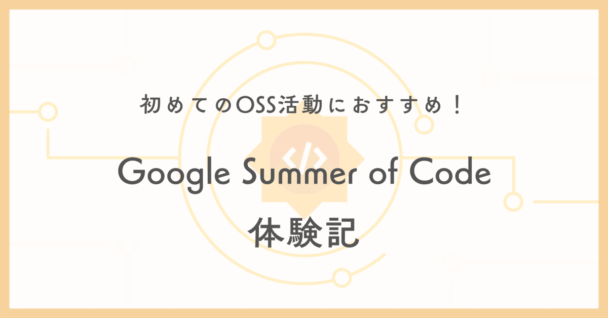
参考：hyaku「初めてのOSS活動におすすめ！Google Summer of Codeの夏が始まるよ」（note、2025/3/18）note.com/yurikomium/n/n12dc41b8b222
1 概要 2 きっかけ 3 TAC 4 日程 5 登壇 6 聴講 7 学び
PART 2 · 1/4 12 / 52
Google Summer of Code、GSoCは、参加者がOSSコミュニティのメンターとともに開発に取り組むプログラムです。メンターは、開発を支援する人です。
||
私は2025年にも応募しましたが、不採択でした。2026年に再挑戦して、選んだのが、Apache NuttXへのWireGuard移植というテーマでした。
GSoCへの応募：選んだテーマ
Implementing WireGuard for Apache NuttX
NuttX 組込み機器向けのOS。決められた時間内の処理を重視する「リアルタイムOS」
WireGuard ネットワーク越しに、暗号化された通信経路をつくるVPN
コードが小さく軽量で、組込み機器にも向く
エッジAIや組込み機器に関わっているため、遠隔の機器へ安全に接続する機能をNuttXに加えるテーマに関心を持った。
1 概要 2 きっかけ 3 TAC 4 日程 5 登壇 6 聴講 7 学び
PART 2 · 2/4 13 / 52
NuttXは、マイコンなどの組込み機器で使われるOSです。決められた時間内に処理することを重視する、リアルタイムOSに分類されます。WireGuardは、ネットワーク越しに暗号化された通信経路をつくるVPNの仕組みです。
||
普段から、カメラなどの機器側でAIの処理を行うエッジAIや、組込み機器に関わっていることもあり、遠隔の機器へ安全に接続するための機能をNuttXに加える、というテーマに関心を持ちました。
||
応募に向けて提案をまとめ、NuttXのGitHubに相談用のIssueを立てて、実装方針や計画について議論しました。
登壇応募のきっかけ
NuttXのGitHub（＋メーリングリスト）で、提案に向けた相談・議論を進めた。
Sony Lund拠点のAlin Jerpeleaさんが活動を見つけ、会社のチャットで連絡をくれた。
CFP（Call for Presentations、講演募集）への応募を勧められ、3/18に連絡、翌3/19に応募した。
GitHubでの相談が、社内のつながりとも重なり、海外で発表する機会になった。
1 概要 2 きっかけ 3 TAC 4 日程 5 登壇 6 聴講 7 学び
PART 2 · 3/4 14 / 52
その活動を見つけて声をかけてくださったのが、Sonyのスウェーデン・Lund拠点にいるAlin Jerpeleaさんです。
||
私はソニーセミコンダクタソリューションズに所属しており、Lundの方々とは仕事でも少し接点がありました。同じSonyグループというつながりもあって、Alinさんが会社のチャットで連絡をくださいました。
||
そこで勧めていただいたのが、Community Over CodeへのCFPへの応募でした。3月18日に声をかけてもらい、翌日の19日に応募しました。GitHubやメーリングリストで進めていた相談が、会社の中でのつながりとも重なり、海外で発表する機会につながりました。
応募・採択結果
○ 4/16 CFP採択 日本時間4/16に通知。現地で登壇する旨を返信した。
✕ 5/1 GSoC不採択 報酬を受けて開発に取り組むことは、できなくなった。
そこから考えたこと
個人で開発を続けて登壇するか、辞退するか 開発に加えて、現地へ行くための費用も検討する必要があった 発表の機会は得られたが、GSoCの報酬を受けて開発に取り組むことはできなくなった。
1 概要 2 きっかけ 3 TAC 4 日程 5 登壇 6 聴講 7 学び
PART 2 · 4/4 15 / 52
先に届いたのは、Community Over CodeのCFP採択の連絡でした。日本時間の4月16日に通知を受け、現地で登壇する旨を返信しました。応募のきっかけをつくってくださったAlinさんには、とても感謝しています。
||
その後、5月1日にGSoC不採択の連絡が届きました。発表の機会はいただけたものの、GSoCの報酬を受けて開発に取り組むことはできなくなりました。
||
そこから、個人で開発を続けて登壇するか、辞退するかも含めて、どうするかを考えました。開発に加え、現地へ行くための費用も検討する必要がありました。
Agenda
1
イベント概要 Community Over Code Glasgow 2026・ASF
~3 MIN
2
参加のきっかけ GSoCへの応募・登壇応募のきっかけ・採択結果
~3 MIN
3
渡航支援制度（TAC） 制度概要・応募内容・手続き・運営協力・時系列
~8 MIN
4
渡航・参加日程 TACで担当した業務（録画担当など）
~3 MIN
5
NuttX／WireGuardの登壇 発表資料（別のスライドで）
~1 MIN
6
聴講・ハッカソン・交流 基調講演・講演メモ・ハッカソン・参加者との交流
~8 MIN
1 概要 2 きっかけ 3 TAC 4 日程 5 登壇 6 聴講 7 学び
PART 3 16 / 52
次は、渡航支援制度TACの話です。
TAC：制度概要
Travel Assistance Committee 。経済的な理由で参加が難しい人に対して、ASFのイベントへの参加を支援する仕組み。
対象外・注意 一般的な生活費は対象外 原則、支援金を本人へ振り込む形ではない。ASFや指定業者が交通・宿泊を手配して支払う
求められること 運営への協力 設営 受付 セッションの補助 撤収
出典：TAC公式サイト（応募方法・支援範囲・審査の説明）
1 概要 2 きっかけ 3 TAC 4 日程 5 登壇 6 聴講 7 学び
PART 3 · 1/6 17 / 52
TACは、Travel Assistance Committeeの略で、経済的な理由で参加が難しい人に対して、ASFのイベントへの参加を支援する仕組みです。
||
公式の案内では、交通費、会期中の宿泊費、カンファレンス参加費が支援対象とされています。一般的な生活費は対象外です。また、原則として支援金を本人へ振り込む形ではなく、ASFや指定業者が交通・宿泊を手配して支払います。
||
その代わり、支援を受ける参加者には、設営や受付、セッションの補助、撤収など、イベント運営への協力が求められます。私は会場の設営と、講演の録画対応を担当しました。
TAC：応募条件
オンラインで申請。申請内容に基づいて審査される。
参加が本人だけでなく、ASFやOSS全体にどんな意味を持つか。
居住地に近い開催地が一般に優先。遠方でも、参加する理由は考慮される。
支援枠と予算は限られているため、応募すれば必ず採択されるわけではない。
1 概要 2 きっかけ 3 TAC 4 日程 5 登壇 6 聴講 7 学び
PART 3 · 2/6 18 / 52
応募はオンラインで行い、申請内容に基づいて審査されます。参加が本人にとってだけでなく、ASFやOSS全体にどのような意味を持つかも重視されます。
||
居住地に近い開催地への申請が一般に優先されますが、遠方のイベントへ参加する理由も考慮される、と説明されています。支援枠と予算は限られているため、応募すれば必ず採択されるわけではありません。
応募した経緯
参加を検討するうえでの課題は、グラスゴーまで行くための費用。
航空券 + ホテル 約50万円
自費で手配すると、当時の見積もり
宿泊費だけでも 約20万円
一泊3万円程度なら、滞在全体で
GSoCの報酬 なし
採択されていればあったが、不採択
勤務先の支援がない個人のOSS活動。登壇できる方法を探す中でTACを見つけ、5/8に応募した。
1 概要 2 きっかけ 3 TAC 4 日程 5 登壇 6 聴講 7 学び
PART 3 · 3/6 19 / 52
次の課題は、グラスゴーまで行くための費用でした。GSoCに採択されていればプログラムの報酬がありましたが、今回は不採択です。航空券とホテルを自費で手配すると、当時の見積もりでは合計50万円ほどになりそうでした。宿泊費だけでも、一泊3万円程度なら滞在全体で20万円近くになります。
||
勤務先の支援がない個人のOSS活動としては、大きな負担です。開発を続けて登壇できる方法を探す中で、TACという渡航支援制度を見つけ、5月8日に応募しました。
応募内容
5/8に申請、6/7に採択
参加目的 採択された講演でWireGuard移植を発表し、開発者からフィードバックを得たい 衛星やエッジAIカメラとの接点。NuttXの開発・保守・活用を学びたい これまでのOSS活動 大規模OSSへの直接の貢献はまだ少ない 個人のロボット関連プロジェクト 業務のエッジAIカメラ向けサンプル・開発支援ツールの公開・保守 今後の開発 GSoC不採択でも、WireGuard移植の提案と開発を継続 今回の発表を節目に、NuttXへ継続的に貢献したい 支援が必要な理由 個人のOSS活動で、勤務先の渡航支援はない 収入から税金・社会保険・生活費・養育費を引くと、使えるお金は月200ドル程度 会場での協力 ハッカソンへの参加・協力、TACの運営業務 SecHack365のチューター、OSSJ・SRE NEXTのボランティア経験 参加後の共有 学んだ内容を日本の開発者へ共有 ApacheコミュニティやASFのイベントを紹介
リンク（GitHubプロフィール、リポジトリなど）を添付。貢献経験の少なさも、そのまま書いた。
1 概要 2 きっかけ 3 TAC 4 日程 5 登壇 6 聴講 7 学び
PART 3 · 4/6 20 / 52
5月8日に申請し、6月7日に採択の連絡をいただきました。応募時に書いた内容を、要約して紹介します。
||
参加目的は、採択された講演でNuttXへのWireGuard移植を発表して、開発者からフィードバックを得たいこと。仕事で関わってきた衛星やエッジAIカメラとの接点もあり、NuttXの開発・保守・活用をコミュニティから学びたいと書きました。
||
これまでのOSS活動は、大規模OSSへの直接の貢献はまだ少ない一方、個人のロボット関連プロジェクトや、業務でのエッジAIカメラ向けサンプルの公開・保守経験を書きました。大規模OSSへの貢献経験が限られていることも、そのまま書いています。
||
支援が必要な理由は、勤務先などからの渡航支援がなく、月の収入から税金や生活費などを差し引くと、個人の活動に使えるお金は月200ドル程度になることです。会場での協力と、参加後の共有も書きました。これが採択理由だったかは分かりませんが、応募内容の一例として参考になればと思います。
採択後の手続き・渡航手配
1 採択の受諾をメールで返信
2 必要書類の確認・提出
3 パスポート情報や渡航日程の連絡
4 イギリスの電子渡航認証「UK ETA」の取得
5 航空券の希望を伝え、今回はJALを利用
6 会場のHilton Glasgowに宿泊。相部屋の想定が、ツインルームを一人で利用
7 SlackのTACチャンネルに参加し、各種やり取り
1 概要 2 きっかけ 3 TAC 4 日程 5 登壇 6 聴講 7 学び
PART 3 · 5/6 21 / 52
採択の連絡のあとは、採択の受諾をメールで返信し、必要書類の確認と提出、パスポート情報や渡航日程の連絡を行いました。
||
イギリスの電子渡航認証、UK ETAも取得しました。航空券は希望を伝えて、今回はJALを利用しました。会場のHilton Glasgowに宿泊しました。相部屋を想像していたものの、実際はツインルームを一人で利用できました。SlackのTACチャンネルにも参加して、各種やり取りをしました。
参加までの時系列
GSoCの結果を待たずにCFPへ応募。不採択のあと、TACへ応募して採択
2月
3月
4月
5月
6月
2月ごろ GSoCへの応募を検討開始
3月16日 NuttXのGitHubにIssueを起票し、提案・相談
3月19日 CFPへ講演案を提出
3月31日 GSoCの提案書を正式に提出
4月16日 CFP採択
5月1日 GSoC不採択
5月8日 TACへ応募
6月7日 TAC採択
GSoC ：検討 → 提案 → 不採択
TAC 5/8〜6/7
CFP ：応募 → 採択
※日付は日本時間。2月ごろの検討開始は記憶に基づき、それ以外はIssueの作成記録、提出・結果通知、応募記録に基づく。
1 概要 2 きっかけ 3 TAC 4 日程 5 登壇 6 聴講 7 学び
PART 3 · 6/6 22 / 52
応募から渡航支援の採択までをまとめると、このような流れでした。
||
2月ごろにGSoCへの応募を検討し始めて、3月16日にNuttXのGitHubにWireGuard移植のIssueを起票しました。3月19日にCFPへ講演案を提出、3月31日にGSoCの提案書を正式に提出しています。
||
4月16日にCFP採択、5月1日にGSoC不採択の通知を受け取りました。5月8日にTACへ応募して、6月7日にTAC採択の通知を受け取りました。
Agenda
1
イベント概要 Community Over Code Glasgow 2026・ASF
~3 MIN
2
参加のきっかけ GSoCへの応募・登壇応募のきっかけ・採択結果
~3 MIN
3
渡航支援制度（TAC） 制度概要・応募内容・手続き・運営協力・時系列
~8 MIN
4
渡航・参加日程 TACで担当した業務（録画担当など）
~3 MIN
5
NuttX／WireGuardの登壇 発表資料（別のスライドで）
~1 MIN
6
聴講・ハッカソン・交流 基調講演・講演メモ・ハッカソン・参加者との交流
~8 MIN
1 概要 2 きっかけ 3 TAC 4 日程 5 登壇 6 聴講 7 学び
PART 4 23 / 52
次は、渡航と参加の日程、TACで担当した業務です。
渡航・参加日程
渡航は10月9日から16日まで、本会議は11日から14日まで。
10/9 金
出発
羽田を出発。ロンドン経由でグラスゴーへ移動
10/10 土
準備
TACの集合・運営説明、Tシャツの受け取り、会場準備、交流
10/11 日
初日
カンファレンス初日。Airflow、StreamPipesなどの講演を聴講
10/12 月
2日目
AI時代のOSS教育、Arrow／Parquetのファジングなどの講演を聴講
10/13 火
登壇
WireGuard移植について登壇。NuttX関連の講演を聴講
10/14 水
最終日
NuttXハッカソン、講演の録画・スピーカー支援。Tika、Lucene関連の講演
10/15 木
移動
グラスゴー→エディンバラに移動、帰国へ
1 概要 2 きっかけ 3 TAC 4 日程 5 登壇 6 聴講 7 学び
PART 4 · 1/3 24 / 52
今回の渡航は10月9日から16日まで、本会議は11日から14日まででした。
||
滞在中は登壇だけでなく、ほかの講演を聞き、運営を手伝い、ハッカソンに参加し、人と話す時間がありました。その全体を通じて、カンファレンスという場を経験できました。
TACの業務：事前説明
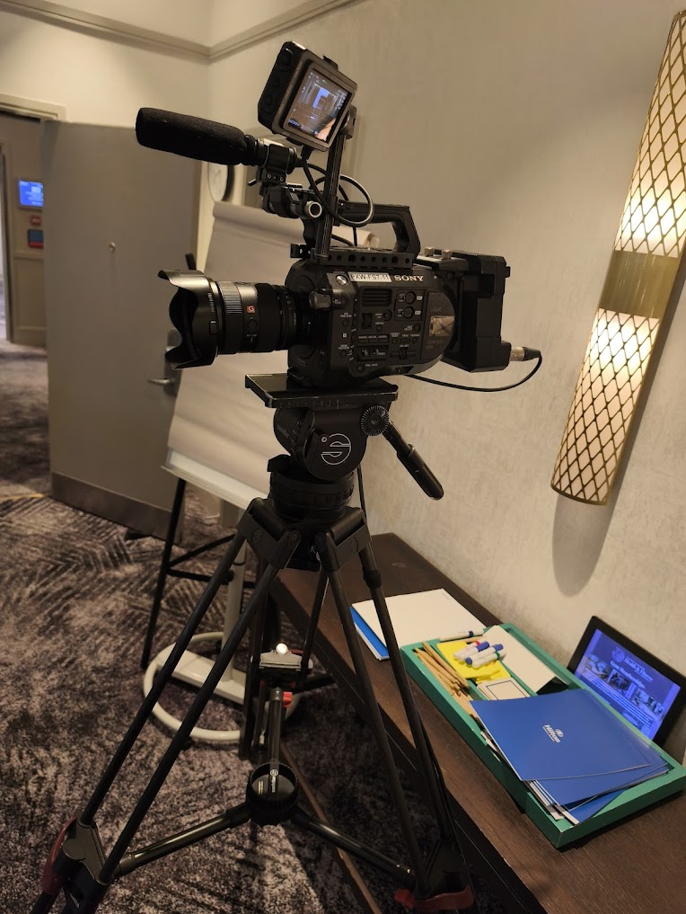
撮影用カメラ。ボタンを押すだけだよ、と説明を受けた。 10/10（土）にTACの参加者が集合 Tシャツを受け取り、運営の説明 案内：部屋の使い分け、運営上の注意点、初日の受付が忙しいこと セッション会場の担当：カメラの録画開始・停止、スピーカーの支援
日本でもカンファレンスのボランティアを経験していたので、仕事内容に大きな違いは感じなかった。
1 概要 2 きっかけ 3 TAC 4 日程 5 登壇 6 聴講 7 学び
PART 4 · 2/3 25 / 52
10月10日の土曜日には、TACの参加者が集まって、Tシャツを受け取り、運営について説明を受けました。
||
会場の部屋の使い分けや、運営上の注意点、初日の受付が忙しくなることなどの案内がありました。セッション会場では、カメラの録画開始・停止や、スピーカーの支援を担当する説明もありました。私は日本でもカンファレンスのボランティアを経験していたので、仕事内容に大きな違いは感じませんでした。
TACの業務：会場設営・録画対応
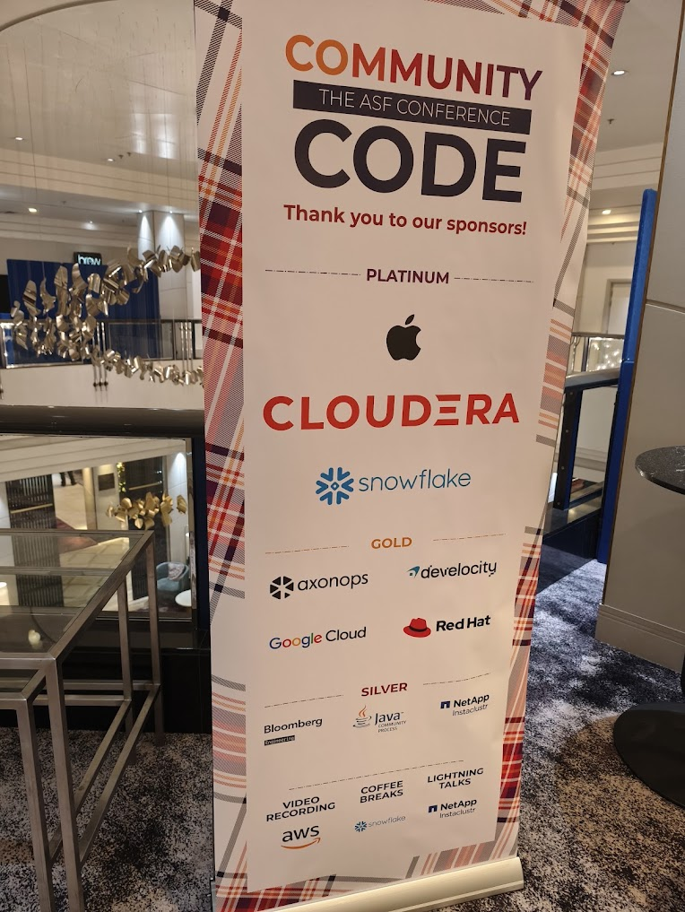
看板？の設営 身長が足りず、他メンバーと共同で設営した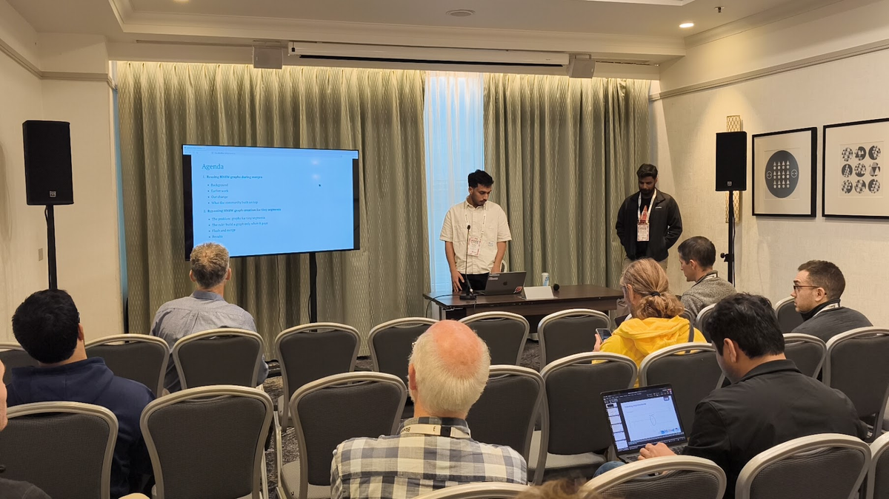
スピーカー対応 部屋の後方に待機。初日はケーブル貸出や機材トラブルが少しあり、担当した最終日は出番がなかった
会場準備：机や看板・バナーなどの設置 最終日：セッション会場での録画・スピーカー対応。録画ボタンを押して開始、講演後に停止するだけ 担当量は比較的少なく、運営への協力と自分の参加を両立できた。
TACと別に運営・ボランティアスタッフがいて、TACメンバーは余力があればSlackで仕事を拾うスタイル。担当内容は開催回や割り当てによって変わると思う。
1 概要 2 きっかけ 3 TAC 4 日程 5 登壇 6 聴講 7 学び
PART 4 · 3/3 26 / 52
実際に担当したのは、会場準備で机や看板、バナーなどを設置する作業と、最終日のセッション会場での録画・スピーカー対応です。
||
録画機器の操作はシンプルで、基本的には録画ボタンを押して開始し、講演が終わったら停止する形でした。操作そのものは難しくありませんでした。
||
今回の私の担当量は比較的少なく、登壇準備や聴講、交流の時間も確保できました。TACと別に運営やボランティアのスタッフがいて、TACメンバーは余力が空いていたらSlackで仕事を拾うスタイルでした。担当内容は、開催回や割り当てによって変わると思います。少なくとも今回は、運営への協力と自分の参加を両立できました。
Agenda
1
イベント概要 Community Over Code Glasgow 2026・ASF
~3 MIN
2
参加のきっかけ GSoCへの応募・登壇応募のきっかけ・採択結果
~3 MIN
3
渡航支援制度（TAC） 制度概要・応募内容・手続き・運営協力・時系列
~8 MIN
4
渡航・参加日程 TACで担当した業務（録画担当など）
~3 MIN
5
NuttX／WireGuardの登壇 発表資料（別のスライドで）
~1 MIN
6
聴講・ハッカソン・交流 基調講演・講演メモ・ハッカソン・参加者との交流
~8 MIN
1 概要 2 きっかけ 3 TAC 4 日程 5 登壇 6 聴講 7 学び
PART 5 27 / 52
次は、登壇の紹介です。本番のスライドに切り替えます。
NuttX／WireGuardの登壇
Implementing WireGuard for Apache NuttX: A GSoC Journey into Secure, High-Performance Edge Connectivity
10/13（火）に登壇 海外のソフトウェアカンファレンスでは初登壇
1 概要 2 きっかけ 3 TAC 4 日程 5 登壇 6 聴講 7 学び
PART 5 · 1/1 28 / 52
10月13日に、Implementing WireGuard for Apache NuttXというタイトルで登壇しました。Apache NuttX上でWireGuardを動かし、組込み機器へ安全にアクセスするための取り組みを紹介しました。GSoCへの応募を出発点に、個人で開発を継続し、コミュニティとやり取りしながら実装を進めた経緯も含めています。
||
私にとって、海外のソフトウェアカンファレンスでの登壇は初めてでした。技術的な内容は、グラスゴーで使ったスライドで紹介します。ここで画面を切り替えます。
||
[note] ここで本番のスライド（docs/presentation/coc-glasgow-reveal/index.html）に切り替える。終わったらこのデッキの「聴講・ハッカソン・交流」に戻る。
Agenda
1
イベント概要 Community Over Code Glasgow 2026・ASF
~3 MIN
2
参加のきっかけ GSoCへの応募・登壇応募のきっかけ・採択結果
~3 MIN
3
渡航支援制度（TAC） 制度概要・応募内容・手続き・運営協力・時系列
~8 MIN
4
渡航・参加日程 TACで担当した業務（録画担当など）
~3 MIN
5
NuttX／WireGuardの登壇 発表資料（別のスライドで）
~1 MIN
6
聴講・ハッカソン・交流 基調講演・講演メモ・ハッカソン・参加者との交流
~8 MIN
1 概要 2 きっかけ 3 TAC 4 日程 5 登壇 6 聴講 7 学び
PART 6 29 / 52
次は、聴講した講演と、ハッカソン、交流です。
基調講演
自分の発表以外にも 組込み データ処理 検索 AI OSS教育 講演は基本YouTubeで視聴可
KEYNOTES · クリックでYouTube
1 概要 2 きっかけ 3 TAC 4 日程 5 登壇 6 聴講 7 学び
PART 6 · 1/13 30 / 52
自分の発表以外にも、組込みからデータ処理、検索、AI、OSS教育まで、幅広い話に触れました。当日のメモに残っている講演を、短く紹介します。講演は基本、YouTubeで視聴できます。
||
基調講演は5本ありました。Stephen Walliさんの、AI時代のソフトウェア工学教育。AIで使うデータやモデルを自分たちで管理するための設計。SnowflakeがOSSを使う立場から、ASFのプロジェクトに貢献するまで。ソフトウェアのサプライチェーンに潜むリスク。そして、初代グランド・セフト・オートの開発チームにいたBrian Baglowさんの、分野を越えた協働の話です。
OSS教育とAI（基調講演）
▶ 大学生がメンターの支援を受けながら実際のOSSプロジェクトに貢献する「Semesters of Code」の取り組み。 OSSコミュニティそのものを学びの場にして、生成AIでコードの書き方が変わるなか、ソフトウェア開発をどう教えるかを考える講演。 学生が実際のプロジェクトに入り、コミュニティの人とやりとりしながら貢献する過程を、大学の授業として設計しているところに惹かれた。 特に面白かった講演 Open Source Software Engineering Education in an AI Encumbered World（Stephen Walli、Carnegie Mellon University）
youtu.be/Lbm9-W0rOT0
いつか自分でも、受講者がOSSコミュニティに最初の一歩を踏み出せるようなカリキュラムをつくって、講義できるようになりたい。
1 概要 2 きっかけ 3 TAC 4 日程 5 登壇 6 聴講 7 学び
PART 6 · 2/13 31 / 52
大学生がメンターの支援を受けながら実際のOSSプロジェクトに貢献する「Semesters of Code」の取り組み。
||
OSSコミュニティそのものを学びの場にして、生成AIでコードの書き方が変わるなか、ソフトウェア開発をどう教えるかを考える講演。
||
学生が実際のプロジェクトに入り、コミュニティの人とやりとりしながら貢献する過程を、大学の授業として設計しているところに惹かれた。
||
いつか自分でも、受講者がOSSコミュニティに最初の一歩を踏み出せるようなカリキュラムをつくって、講義できるようになりたい。
OSPOとAI生成のPR
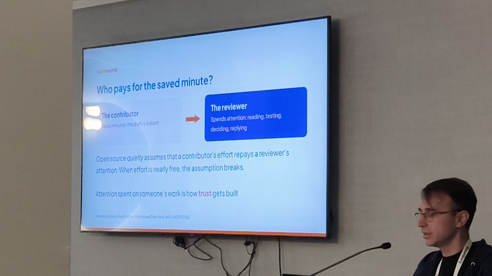
生成AIでPRの下書きを数秒で作れても、受け取った側は差分を読み、変更の意図を確かめ、何をテストすべきかを判断する。あるOSSでは、PRの一次確認からテスト対象を見つけるまでの時間が、3〜4分から約90分 に延びた。 Hacktoberfest：2020年に内容の乏しいPRが殺到し、参加を表明したリポジトリだけを対象にする方式へ。2026年には、AIで手間の少ないPRを作りやすくなったことを背景に、PRを報酬の集計対象から外した。 AI利用方針の調査：83.3% が許可または奨励。67.3% が人間の十分な関与を、48.8% が利用の開示を求めた。 特に面白かった講演 From Legacy Governance to Community Leadership: Building a Network-Focused OSPO（Nikola Babadzhanov、Bosch）
企業のOSPOにも、開発者がコミュニティとのやり取りまで担えるよう支える役割があると感じた。
1 概要 2 きっかけ 3 TAC 4 日程 5 登壇 6 聴講 7 学び
PART 6 · 3/13 32 / 52
生成AIでPRの下書きを数秒で作れても、受け取った側は差分を読み、変更の意図を確かめ、何をテストすべきかを判断する。あるOSSでは、PRの一次確認からテスト対象を見つけるまでの時間が、3〜4分から約90分 に延びた。
||
Hacktoberfest：2020年に内容の乏しいPRが殺到し、参加を表明したリポジトリだけを対象にする方式へ。2026年には、AIで手間の少ないPRを作りやすくなったことを背景に、PRを報酬の集計対象から外した。
||
AI利用方針の調査：83.3% が許可または奨励。67.3% が人間の十分な関与を、48.8% が利用の開示を求めた。
||
企業のOSPOにも、開発者がコミュニティとのやり取りまで担えるよう支える役割があると感じた。
Apache Airflow
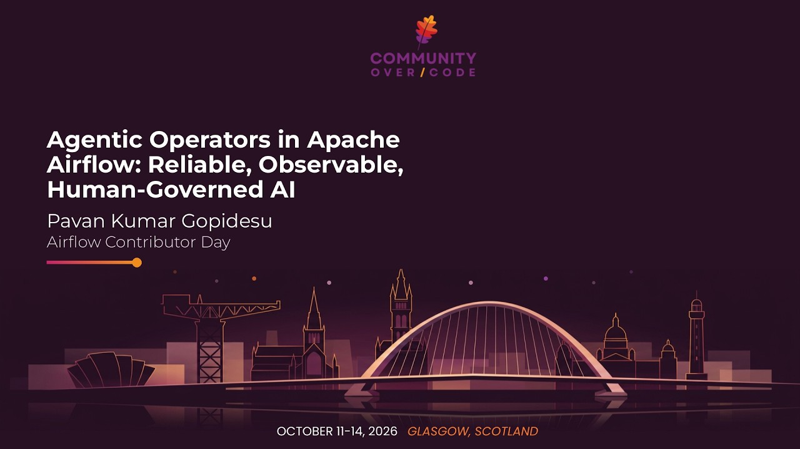
▶ Airflowは、複数の処理を決められた順序や時刻に実行し、結果を管理するソフトウェア。 講演では、その処理の中にAIエージェント（目的に沿って処理やツールを選び、作業を進めるAI）を組み込み、実行状況を把握したり、人が確認・判断したりする仕組みを扱っていた。 その他の講演 Agentic Operators in Apache Airflow: Reliable, Observable, Human-Governed AI
youtu.be/TxmwLKmJ5YI
前日の夕食でたまたま隣の席になった縁で聞いた。生成AIをCI/CDフローに組み込むことや、その不確実性への対処方法が参考になり、使ってみたいと思った。
1 概要 2 きっかけ 3 TAC 4 日程 5 登壇 6 聴講 7 学び
PART 6 · 4/13 33 / 52
Airflowは、複数の処理を決められた順序や時刻に実行し、結果を管理するソフトウェア。
||
講演では、その処理の中にAIエージェント（目的に沿って処理やツールを選び、作業を進めるAI）を組み込み、実行状況を把握したり、人が確認・判断したりする仕組みを扱っていた。
||
前日の夕食でたまたま隣の席になった縁で聞いた。生成AIをCI/CDフローに組み込むことや、その不確実性への対処方法が参考になり、使ってみたいと思った。
Apache StreamPipes
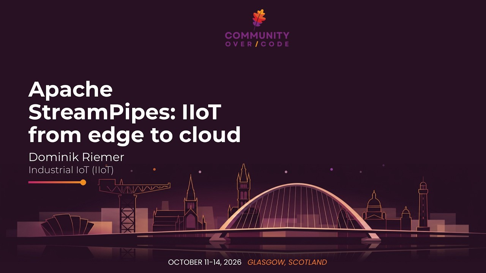
▶ センサーや機械からデータを取り込み、加工・保存・可視化へつなげる産業IoT基盤の紹介。 画面上の操作で処理を組み立てる仕組みや、機器との通信方法、クラウドサービスとの違いなどに関心を持った。 その他の講演 Apache StreamPipes: IIoT from edge to cloud
youtu.be/A8O0MUeGnew
普段扱っているエッジ機器や、工場の設備を制御するPLCにも近い話題だった。
1 概要 2 きっかけ 3 TAC 4 日程 5 登壇 6 聴講 7 学び
PART 6 · 5/13 34 / 52
センサーや機械からデータを取り込み、加工・保存・可視化へつなげる産業IoT基盤の紹介。
||
画面上の操作で処理を組み立てる仕組みや、機器との通信方法、クラウドサービスとの違いなどに関心を持った。
||
普段扱っているエッジ機器や、工場の設備を制御するPLCにも近い話題だった。
Arrow / Parquet C++のファジング
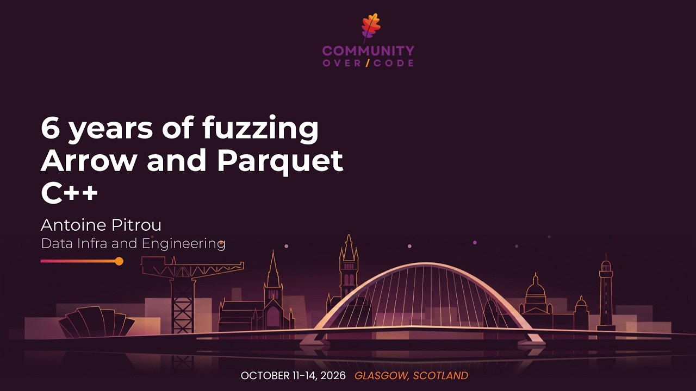
▶ Arrowは大量のデータをメモリ上で効率よく扱う仕組み、Parquetは分析用データの保存形式。 これらをC++で実装したコードに、多様な入力を与えて不具合を探す「ファジング」を6年間続けてきた取り組み。検証の技術に加え、活動の継続や、それを支える資金についても考える機会になった。 その他の講演 6 years of fuzzing Arrow and Parquet C++
youtu.be/X7h_kcSvzAo
最近はC++を書いており、ツール利用の参考になった。
1 概要 2 きっかけ 3 TAC 4 日程 5 登壇 6 聴講 7 学び
PART 6 · 6/13 35 / 52
Arrowは大量のデータをメモリ上で効率よく扱う仕組み、Parquetは分析用データの保存形式。
||
これらをC++で実装したコードに、多様な入力を与えて不具合を探す「ファジング」を6年間続けてきた取り組み。検証の技術に加え、活動の継続や、それを支える資金についても考える機会になった。
||
最近はC++を書いており、ツール利用の参考になった。
NuttX製のロケット高度計
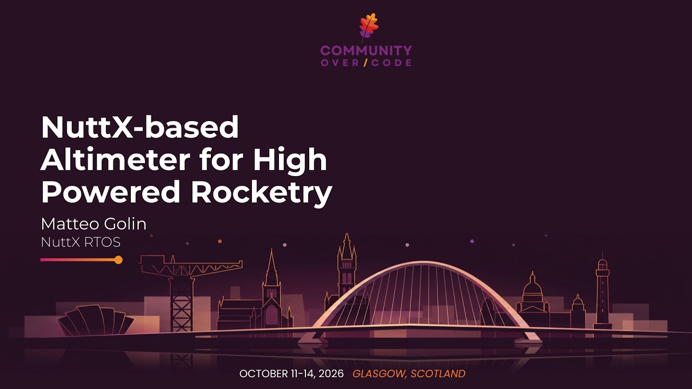
▶ NuttXを使ったロケット用高度計の講演。 飛行データの記録や、パラシュート展開などの機能を、具体的な機器として実装する話だった。 その他の講演 NuttX-based Altimeter for High Powered Rocketry
youtu.be/QLZR6PHu3dc
機械・航空やロボティクスを学んできた自分にとって、特に関心のあるテーマ。大学時代にロケットを作っていたので、少しロケット談義をした。
1 概要 2 きっかけ 3 TAC 4 日程 5 登壇 6 聴講 7 学び
PART 6 · 7/13 36 / 52
NuttXを使ったロケット用高度計の講演。
||
飛行データの記録や、パラシュート展開などの機能を、具体的な機器として実装する話だった。
||
機械・航空やロボティクスを学んできた自分にとって、特に関心のあるテーマ。大学時代にロケットを作っていたので、少しロケット談義をした。
OpenGL ES on NuttX（µGLy）
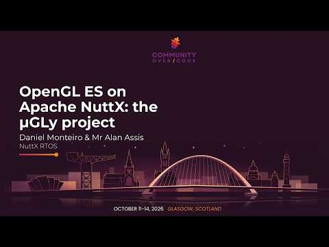
▶ OpenGL ESは、組込み機器などで図形や3Dの映像を描くための共通の規格。µGLyは、その規格の一つであるOpenGL ES 1.0 Common LiteをNuttXで使えるようにするプロジェクト。 メモリなどの制約が厳しい環境で、共通の規格を使えるようにする狙いに関心を持った。 その他の講演 OpenGL ES on Apache NuttX: the µGLy project
youtu.be/q_CLBcrHyFw
たしかGSoCのプロジェクトで、途中経過とのこと。
1 概要 2 きっかけ 3 TAC 4 日程 5 登壇 6 聴講 7 学び
PART 6 · 8/13 37 / 52
OpenGL ESは、組込み機器などで図形や3Dの映像を描くための共通の規格。µGLyは、その規格の一つであるOpenGL ES 1.0 Common LiteをNuttXで使えるようにするプロジェクト。
||
メモリなどの制約が厳しい環境で、共通の規格を使えるようにする狙いに関心を持った。
||
たしかGSoCのプロジェクトで、途中経過とのこと。
Raspberry Pi 4BへのNuttX移植
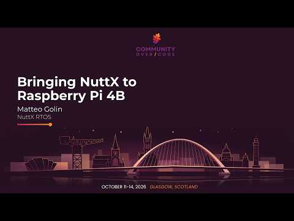
▶ 小型コンピューターのRaspberry Pi 4Bへ、NuttXを移植する取り組み。 Linuxでおなじみのボードを別のOSで動かす話として、移植時にどの部分から機能を揃えていくのか、NuttXの対象を広げる意味は何か、という点に関心を持った。 その他の講演 Bringing NuttX to Raspberry Pi 4B
youtu.be/fRevSa9NM1I
これもGSoCのプロジェクト発表で、検討ベースの内容だった。
1 概要 2 きっかけ 3 TAC 4 日程 5 登壇 6 聴講 7 学び
PART 6 · 9/13 38 / 52
小型コンピューターのRaspberry Pi 4Bへ、NuttXを移植する取り組み。
||
Linuxでおなじみのボードを別のOSで動かす話として、移植時にどの部分から機能を揃えていくのか、NuttXの対象を広げる意味は何か、という点に関心を持った。
||
これもGSoCのプロジェクト発表で、検討ベースの内容だった。
Apache Tika 4.x
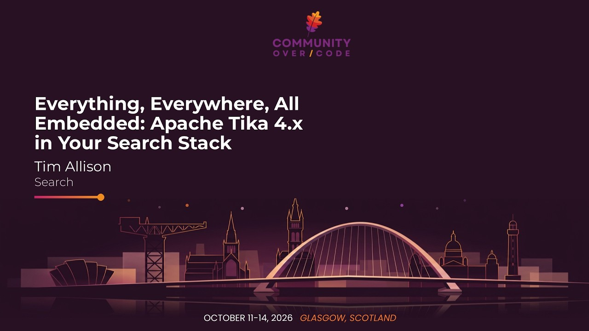
▶ Tikaは、さまざまな形式のファイルから、本文や作成者などの情報を取り出すソフトウェア。 講演では、PDFの本文だけでなく、図や表、画像の情報も検索に使う取り組みを紹介。画像と言葉を一緒に扱うAIモデル「VLM」の活用や、抽出結果の誤り、ファイル内に残る思わぬ情報の扱いも話題になった。 その他の講演 Everything, Everywhere, All Embedded: Apache Tika 4.x in Your Search Stack
youtu.be/RVFurkHgMMg
ちょうど1000ページ超のPDFから、LLMベースでいかに仕様を抽出するか悩んでおり、参考になった。
1 概要 2 きっかけ 3 TAC 4 日程 5 登壇 6 聴講 7 学び
PART 6 · 10/13 39 / 52
Tikaは、さまざまな形式のファイルから、本文や作成者などの情報を取り出すソフトウェア。
||
講演では、PDFの本文だけでなく、図や表、画像の情報も検索に使う取り組みを紹介。画像と言葉を一緒に扱うAIモデル「VLM」の活用や、抽出結果の誤り、ファイル内に残る思わぬ情報の扱いも話題になった。
||
ちょうど1000ページ超のPDFから、LLMベースでいかに仕様を抽出するか悩んでおり、参考になった。
Apache Lucene
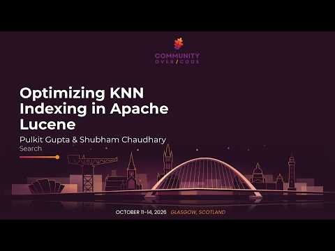
▶ Luceneは、アプリケーションに検索機能を組み込むためのソフトウェア。 文章などの特徴を数値の並びに変換し、似たものを探す「ベクトル検索」の高速化がテーマ。検索に使うデータ構造や数値の保存方法を工夫して、処理速度やメモリ使用量を改善する取り組み。 その他の講演 Optimizing KNN Indexing in Apache Lucene
youtu.be/J93Ac5-FvRk
正直あまりわからなかったが、同じApacheのイベントの中に、これだけ異なる分野が並んでいることも印象に残った。かなり理論ベースの学術的な発表だった。
1 概要 2 きっかけ 3 TAC 4 日程 5 登壇 6 聴講 7 学び
PART 6 · 11/13 40 / 52
Luceneは、アプリケーションに検索機能を組み込むためのソフトウェア。
||
文章などの特徴を数値の並びに変換し、似たものを探す「ベクトル検索」の高速化がテーマ。検索に使うデータ構造や数値の保存方法を工夫して、処理速度やメモリ使用量を改善する取り組み。
||
正直あまりわからなかったが、同じApacheのイベントの中に、これだけ異なる分野が並んでいることも印象に残った。かなり理論ベースの学術的な発表だった。
NuttXハッカソン
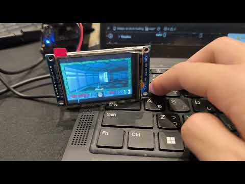
▶ 10/14に参加 企画：ソニーの小型開発ボード「Spresense」などで、NuttXのソースコードから実行用プログラムを作って動かす 成果の一つ：Spresense上での3Dシューティングゲーム「DOOM」の動作 開催後の公式レポートでも、会場での達成が紹介された
実機を囲んで取り組み、結果を人に見せる場に参加できた。帰国後、開発内容をPR提出してContributeした。
1 概要 2 きっかけ 3 TAC 4 日程 5 登壇 6 聴講 7 学び
PART 6 · 12/13 41 / 52
10月14日には、NuttXのハッカソンにも参加しました。公式の事前案内では、ソニーの小型開発ボード、Spresenseなどを使って、NuttXのソースコードから実行用のプログラムを作り、動かす企画として紹介されていました。
||
今回の成果の一つが、Spresense上での、3Dシューティングゲーム、DOOMの動作です。開催後の公式レポートでも、会場でこの目標を達成したことが紹介されています。私もハッカソンでの成果を共有しました。
||
講演を聞くだけでなく、実機を囲んで取り組み、その結果を人に見せる場に参加できたことも、今回の経験になりました。帰国後には、開発内容をPR提出してContributeしました。
||
[note] 動画は埋め込み。会場のネットワークで再生できない場合は、サムネイルだけ見せて先へ進む。
参加者との交流
毎晩 10/10 事前懇談会 10/11 ウェルカムパーティー 10/12 Game Night 10/13 クイズ大会 10/14 LT大会
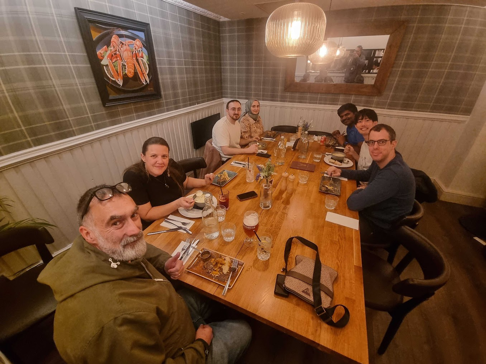
10/10 事前懇談会 TACメンバー中心の机で、7か国出身のメンバーとスコットランド料理（無料！）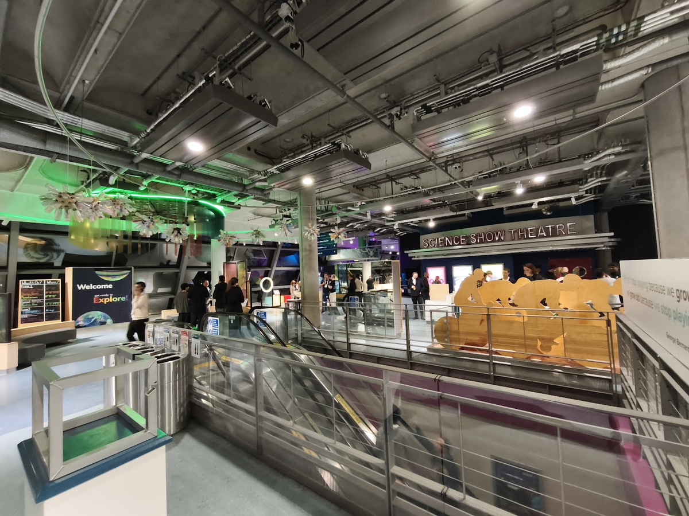
10/11 ウェルカムパーティー 科学博物館を貸し切り。ここで日本人の方とも会えた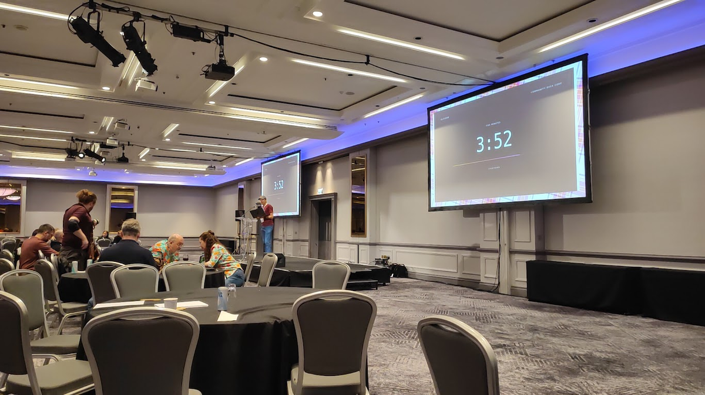
10/14 LT大会 スライド禁止で5分間フリートーク形式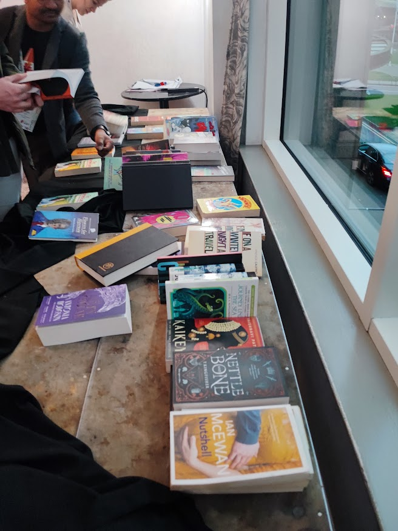
本の寄贈所 おすすめの本を持ち寄って、手紙付きでプレゼントし合う交流場
講演だけでは分からない、その人がOSSに関わった経緯を知れた。NuttXの関係者とも、現地で会えた。
1 概要 2 きっかけ 3 TAC 4 日程 5 登壇 6 聴講 7 学び
PART 6 · 13/13 42 / 52
講演での質疑応答の他、毎晩何かしらのイベントが開催されていました。10日は事前懇談会、11日はウェルカムパーティー、12日はGame Night、13日はクイズ大会、14日はLT大会です。昼食も懇談会形式でした。
||
10日の事前懇談会では、TACメンバー中心の机に座り、7か国出身のメンバーでスコットランド料理を楽しみました。11日は、グラスゴーの科学博物館を貸し切ったウェルカムパーティーで、ここで日本人の方とも会えました。14日のLT大会は、スライド禁止で5分間のフリートーク形式でした。
||
食事会などでも、参加者と話す時間がありました。講演だけでは分からない、その人がどんな経緯でOSSに関わり、何に取り組んでいるのかを知る機会になりました。NuttXの関係者と現地で会えたことも、大切な経験です。オンラインで見ていたコミュニティが、同じ場所に集まって話をする人たちとして感じられるようになりました。
Agenda
1
イベント概要 Community Over Code Glasgow 2026・ASF
~3 MIN
2
参加のきっかけ GSoCへの応募・登壇応募のきっかけ・採択結果
~3 MIN
3
渡航支援制度（TAC） 制度概要・応募内容・手続き・運営協力・時系列
~8 MIN
4
渡航・参加日程 TACで担当した業務（録画担当など）
~3 MIN
5
NuttX／WireGuardの登壇 発表資料（別のスライドで）
~1 MIN
6
聴講・ハッカソン・交流 基調講演・講演メモ・ハッカソン・参加者との交流
~8 MIN
1 概要 2 きっかけ 3 TAC 4 日程 5 登壇 6 聴講 7 学び
PART 7 43 / 52
最後に、感想と学びです。
感想・学び
1 生成AI時代に感じた「Community Over Code」の精神性 初めて来た人を歓迎し、食事やハッカソンで話し、使ってみたい人が実機で動かせるよう手を貸す。その行動を実践している人たちに会えた
2 OSSへの貢献から、プロジェクトの運営へ まずはコントリビューターとして継続して関わり、その先でコミッター、PMCメンバーへと、少しずつ役割を広げたい
3 英語での登壇応募を支えた、国内イベントと研究室での経験 国内カンファレンスのボランティア、学部・修士の研究室での英語、海外の展示会への派遣とハッカソン。別々の経験が、提案を書くときにつながった
4 身近なOSS活動から、海外のコミュニティに関わるには 業務で使うOSSへの貢献、メンタリングプログラム（GSoC・LFX Mentorship・Outreachy）、国内イベントへの参加
1 概要 2 きっかけ 3 TAC 4 日程 5 登壇 6 聴講 7 学び
PART 7 · 1/8 44 / 52
最後に、感想と学びです。最初に全体像を示します。
||
一つ目は、生成AI時代に感じたCommunity Over Codeの精神性。二つ目は、OSSへの貢献から、プロジェクトの運営へ。三つ目は、英語での登壇応募を支えた、国内イベントと研究室での経験。四つ目は、身近なOSS活動から、海外のコミュニティに関わるには。そのあと、終わりにと、先人の歩みです。
生成AI時代に感じた「Community Over Code」の精神性
いちばん印象に残ったのは、「Community Over Code」という言葉を、実際に行動に移している人たちに会えたこと。
初めて来た人を歓迎
食事やハッカソンで話す
実機で動かせるよう手を貸す
一つひとつの行動が、OSSを使う人や、次に開発に加わる人を増やしていく。
生成AIでコードを書くのが速くなるほど、何を一緒に作るのかを話し合い、使う人を支え、長く付き合える関係をつくることが大事になる。今回見たのは、その実践。
1 概要 2 きっかけ 3 TAC 4 日程 5 登壇 6 聴講 7 学び
PART 7 · 2/8 45 / 52
今回いちばん印象に残ったのは、Community Over Codeという言葉を、実際に行動に移している人たちに会えたことです。初めて来た人を歓迎し、食事やハッカソンで話し、ソフトウェアを使ってみたい人が実機で動かせるように手を貸す。そういう一つひとつの行動が、OSSを使う人や、次に開発に加わる人を増やしていくのだと感じました。
||
生成AIでコードを書くのが速くなるほど、何を一緒に作るのかを話し合い、使う人を支え、長く付き合える関係をつくることが大事になると思います。今回のイベントで見たのは、その実践でした。
||
補足です。ヨーロッパの歴史を思い浮かべると、背景の異なる人たちが話し合い、共通のルールをつくっていくという点で、少し重なるものを感じました。ソフトウェアでも、世界で使われる標準や取り決めは、国を越えた議論の積み重ねで形になっていきます。日本からもその議論に加わる人が増えれば、日本の技術を生かせる場が広がり、国としての力にもつながると思います。
OSSへの貢献から、プロジェクトの運営へ
今後の計画：Apacheプロジェクトへの関わり方の順序
まずは ① コントリビューター コードや文書、小さな修正で貢献する。
少しずつ ③ PMCメンバー プロジェクトの運営を担う（Project Management Committee）。
まずはコントリビューターとして継続して関わり、少しずつ役割を広げたい。
今は業務でNuttXを使わなくなった。腰を据えて関わるプロジェクトは、これから考える。
Alinさんの活動を見て、OSSをApacheのプロジェクト候補として提案し、財団のもとで育てる取り組みにも関心を持った。
参考：Apache Community Development - Contributing to the Apache Software Foundation
1 概要 2 きっかけ 3 TAC 4 日程 5 登壇 6 聴講 7 学び
PART 7 · 3/8 46 / 52
今後の計画として、まずはコードや文書、小さな修正で貢献するコントリビューターとして、継続して関わりたいです。その先で、変更を取り込む権限を持つコミッターや、プロジェクトの運営を担うPMC、Project Management Committeeのメンバーへと、少しずつ役割を広げていけたらと思います。
||
今は業務でNuttXを使わなくなったので、どのプロジェクトに腰を据えて関わるかは、これから考えるところです。Alinさんの活動を見て、既存のプロジェクトに貢献することに加え、OSSをApacheのプロジェクト候補として提案し、財団のもとで育てていく取り組みにも関心を持ちました。
英語での登壇応募を支えた、国内イベントと研究室での経験
声をかけてもらったとき、心理的障壁なく、すぐにCFPに応募できる準備ができていた。
ソフトウェアカンファレンスでボランティアをして、イベントの雰囲気や運営の流れを知っていた。
学部・修士課程の研究室で、英語でやりとりしたり、研究の内容を論文にまとめたりした。
海外の展示会に派遣してもらい、ハッカソンをした。
別々に積んできた経験が、英語で講演の提案を書くときにつながった。
身近に、海外のコミュニティで活動する人が何人かいた。どう関わっているかを近くで見ていたので、応募する姿も想像できた。
1 概要 2 きっかけ 3 TAC 4 日程 5 登壇 6 聴講 7 学び
PART 7 · 4/8 47 / 52
Alinさんから声をかけてもらったとき、心理的障壁なく、すぐにCFPに応募できるだけの準備ができていたのは大きかったと思います。
||
国内のソフトウェアカンファレンスでボランティアをして、イベントの雰囲気や運営の流れを知っていたこと。学部・修士課程の研究室で、英語でやりとりしたり、研究の内容を論文にまとめたりしたこと。海外の展示会に派遣してもらい、ハッカソンをしたこと。別々に積んできた経験が、英語で講演の提案を書くときにつながりました。
||
身近に、海外のコミュニティで活動している人が何人かいたことも大きかったです。どんな人が、どう関わっているのかを近くで見ていたから、自分が応募する姿も想像できました。
身近なOSS活動から、海外のコミュニティに関わるには
身近なOSS活動から、海外のコミュニティに関わるには。自分が知っている範囲での、おすすめの入り口。
1
業務で使うOSSに貢献する 王道。再現手順の共有や、ドキュメントの分かりにくい箇所の修正から。案外、メンテナは少なく、簡単に直せる箇所がある。
2
メンタリングプログラムの募集テーマから選ぶ GSoC、LFX Mentorship、Outreachy。開発者と話しながら手を動かす。（次のスライド）
3
国内のイベントに参加する connpassなどの小さな勉強会から。ボランティアスタッフの募集を見かけたら、運営側に入るのも一つの方法。Linux Foundation主催のカンファレンスは、毎年日本でも開催。
Linux Foundation JP (@Linux_Fdtn_JP) / X スタッフ募集は、LinkedInやX（Twitter）でも告知される。
1 概要 2 きっかけ 3 TAC 4 日程 5 登壇 6 聴講 7 学び
PART 7 · 5/8 48 / 52
自分が知っている範囲での、おすすめの入り口です。
||
一つ目は、業務で使うOSSに貢献することです。王道なのはこちらで、業務で見つけた不具合の再現手順を共有したり、ドキュメントの分かりにくい箇所を直したりするところから始められます。案外、世の中で使われているOSSのメンテナは少ないし、簡単に直せる箇所があります。
||
二つ目は、メンタリングプログラムの募集テーマから選ぶことです。具体的には、次のスライドの三つです。
||
三つ目は、国内のイベントに参加することです。connpassなどで見つけた小さな勉強会からでも、参加や発表の経験を積めます。カンファレンスでボランティアスタッフの募集を見かけたら、運営側に入ってみるのも一つの方法です。Linux Foundation主催のカンファレンスは毎年日本でも開催されていて、「カンファレンスへの登壇」の心理的ハードルを下げるために、参加してみると良いです。
||
[note] OSSJ 2025では、GoogleのStephanie Taylorさんが、GSoC・LFX Mentorship・Outreachyの3つを紹介していた。
メンタリングプログラム
募集テーマから関心のあるものを選び、開発者と話しながら手を動かす
私も、GSoCに向けてテーマを選び、コミュニティに相談したことが、登壇につながった
業務でOSS活動をしていない人におすすめ。コミュニティが重視するテーマが載っているので、CFP採択率が高い印象
OSSJ 2025：GoogleのStephanie Taylorさんが「Bridging the Gap: Mentorship Programs for Your Open Source Journey」で、この3つを紹介していた。
1 概要 2 きっかけ 3 TAC 4 日程 5 登壇 6 聴講 7 学び
PART 7 · 6/8 49 / 52
一つ目は、業務で使うOSSに貢献することです。王道なのはこちらで、不具合の再現手順の共有や、ドキュメントの分かりにくい箇所の修正から始められます。案外、メンテナは少なく、簡単に直せる箇所があります。
||
二つ目は、メンタリングプログラムの募集テーマから選ぶことです。GSoC、LFX Mentorship、Outreachyの三つがあります。募集テーマから関心のあるものを選び、開発者と話しながら手を動かします。
||
三つ目は、国内のイベントに参加することです。connpassなどの小さな勉強会から、参加や発表の経験を積めます。ボランティアスタッフの募集を見かけたら、運営側に入るのも一つの方法です。Linux Foundation主催のカンファレンスは、毎年日本でも開催されています。
終わりに
個人のOSS活動からCommunity Over Codeに登壇し、世界のSWコミュニティに飛び込んだ体験談。
海外登壇は、幼い頃からITに触れてきた人だけの世界でもない
技術に興味がある人 世界の人と話してみたい人 コミュニティに関わってみたい人 にも、入口がある
（自分が業務でSWを専業にしたのは27歳くらいから。）
国や会社を越えて一緒にものをつくり、顔の見える関係を増やすことが、世界の相互理解や、平和に繋がるとも思っている。
OSS活動は、SWのエコシステムを支え、世界の営みを支える国際活動。 次は君の番だ！！（ワンフォーオール！！）
自分も、まだ参加し始めたばかり。この体験が、誰かが世界のコミュニティへ一歩踏み出すきっかけになればうれしい。
1 概要 2 きっかけ 3 TAC 4 日程 5 登壇 6 聴講 7 学び
PART 7 · 7/8 50 / 52
個人のOSS活動からCommunity Over Codeに登壇し、世界のSWコミュニティに飛び込んだ体験談をお話ししました。
||
海外登壇と聞くと「自分なんかが」と思ってしまう人もいるかと思いますが、幼い頃からITに触れてきた人だけの世界でもありません。技術に興味がある人、世界の人と話してみたい人、コミュニティに関わってみたい人にも、入口があると思います。ちなみに自分は、業務でSWをしっかり専業にしたのは27歳くらいからでした。
||
OSS活動は、SWのエコシステムを支え、世界の営みを支える国際活動です。国や会社を越えて一緒にものをつくり、顔の見える関係を増やすことが、世界の相互理解や、平和に繋がるとも思っています。少し大きな願いですが、私はそうした思いも持って、これから活動を続けていきたいです。
||
自分も、まだ参加し始めたばかりです。この体験が、誰かが世界のコミュニティへ一歩踏み出すきっかけになればうれしいです。次は君の番だ！ワンフォーオール！
登壇準備を通して知った先人の歩み（上田理さん）
登壇の準備で、ソニーのOSS活動を調べて知った、上田理さんの歩み。企業や地域を越えて開発者との関係を築く考え方に、強く共感した。
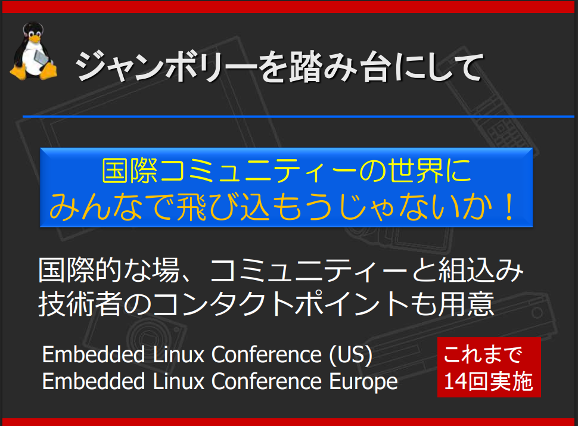
CE Linux Forum 10年間の不思議な体験 より。国内カンファレンスを踏み台に！！という理念で活動していたとのこと。 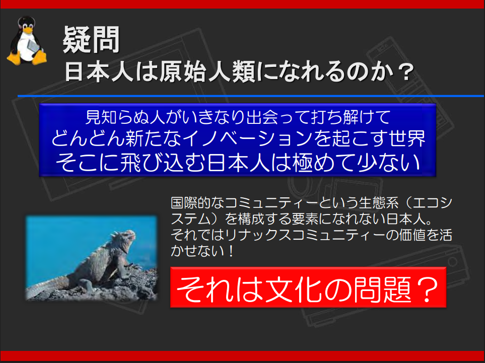
同じ資料より。大航海時代に世界に出たり、アメリカを建国する歴史的経験なのかな〜とも感じた。
技術を通じて世界の人とつながることの価値は、こうした先人の活動とも重なる。その思いを、自分なりに引き継いでいける人になりたい。
残念ながら、ご存命の間にお話できなかった。 ソニー公式 / OpenChain
1 概要 2 きっかけ 3 TAC 4 日程 5 登壇 6 聴講 7 学び
PART 7 · 8/8 51 / 52
登壇の準備を進める中で、ソニーがこれまでOSSにどう関わってきたのかを調べました。そのときに知ったのが、上田理さんが社内外で進めてこられたOSS活動です。公開資料を読む中で、企業や地域を越えて開発者との関係を築くという考え方に強く共感しました。
||
残念ながらご存命の間にお話できなかったのですが、自分が今回感じた、技術を通じて世界の人とつながることの価値は、こうした先人の活動とも重なるものだと思いました。これから経験を積み、その思いを自分なりに引き継いでいける人になりたいです。
謝辞
52 / 52
ありがとうございました。登壇への応募を勧めてくださったAlin Jerpeleaさん、開発や議論で関わってくださったApache NuttXコミュニティの皆さん、渡航を支援してくださったTAC、カンファレンスの運営・スポンサーの皆さん、現地で交流してくださった皆さんに感謝します。
||
グラスゴーでの発表のスライドは、QRコードから見られます。コードと記録はGitHubにあります。
 GLASGOW TALK
GLASGOW TALK